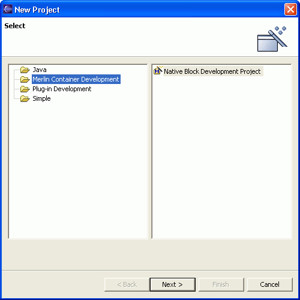
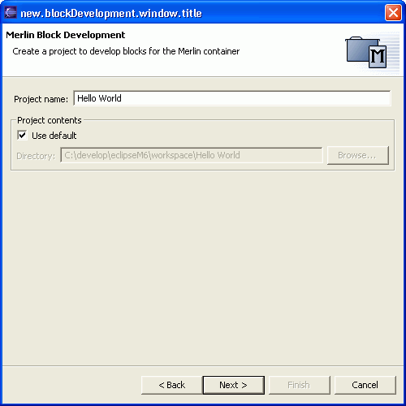
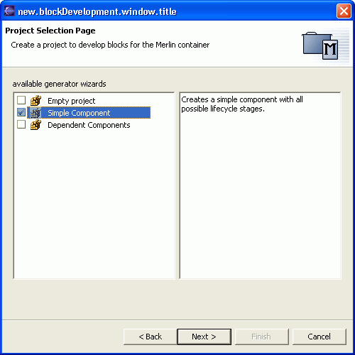

In MerlinStudio a block is equivalent to an eclipse project. Therefor we will use the term "block" in this document as a synonym to "project".
In order to create a block you have to create an eclipse project with a special project nature. This is done by the following steps:
1. Select the menu item File > New > Project.... or press the "new project" button in the toolbar to open the New Project wizard

Select the "Merlin development" category and than "create a block". Note that the "show all wizards" checkbox has to be checked!
Press "Next".

2. In the new project wizard enter the project name. This is done exactly the same way as you do it with normal Java projects

3. In the next wizard page you can select the type of block you would like to start with.
With the current version of MerlinStudio there are only a few types of example blocks available. This will be changed in future versions so that one has a full range of ready to use blocks / components.
Note: All example blocks are created by an highly flexible template engine which is integrated within MerlinStudio. This template engine enables you to create and deliver your own standard blocks. How to use the template enginge will be elaborated later in this manual.
4. After you have selected a block template and press "Finish" the complete eclipse project - aligned with your selected block type - will be created for you. You should now see a new eclipse project with a similar structure:

Congratulations! You have just created your first Merlin block / component.